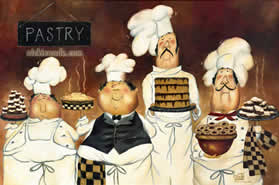

Welcome!

Are you planning a career in baking? Are you considering becoming a professional baker, a caterer or personal chef, a food writer or food stylist? Then, UW-Madison Pastry School will help you realize your goal.
UW – Madison Pastry School is a baking school offering both long-term and intensive short-term courses in pastry.
At this school, the students bake every day under the guidance of certified chefs and taste the pastries they have prepared. The emphasis is on mastering the important techniques, understanding the theory, and learning how good pastries should taste.